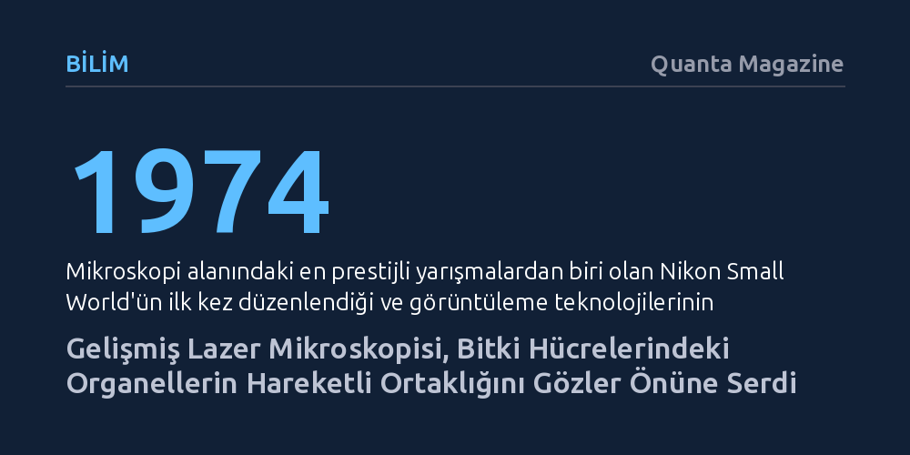

BILIM · Quanta Magazine · 2026-10-22
Konfokal lazer mikroskopisiyle kaydedilen görüntüler, bitki hücrelerindeki mitokondrilerin kloroplastlar arasında hızla manevra yaparak şekeri enerjiye dönüştürdüğü dinamik ortaklığı ortaya koydu. 2026 Nikon Small World ödüllü çalışma, organellerin hücresel düzeydeki canlı etkileşimini benzersiz bir netlikle görünür kılıyor.
Ders kitaplarında sabit şemalarla anlatılan hücre içi dünyasının, organellerin birbirine yol verip eşgüdümle çalıştığı akıcı ve canlı bir trafik barındırdığını gösteriyor.

İskoçya'nın Edinburgh kentinde dondurucu bir şubat sabahı mikolog Patrick Hickey, mikroskop altında inceleyecek canlı biyolojik materyal bulmakta zorlanıyordu. Bahçesindeki bitki ve mantarlar soğuktan kurumuş, yaz aylarının zengin biyolojik çeşitliliğini barındıran su birikintileri çoktan buz tutmuştu. Hücrenin enerji üretim merkezleri olan mitokondrileri incelemek isteyen araştırmacı, taze numune elde etmek için hardal tohumu çimlendirmeyi planlıyordu ancak sabırsızdı. Mutfakta kahvesini hazırlarken pencere kenarında asılı duran ve soğuğa dayanıklı bir telgraf çiçeğini fark etti.
Bitkiden kestiği küçük bir yaprak parçasını laboratuvara götürüp incelediğinde beklemediği bir manzarayla karşılaştı. Hücre içindeki mitokondriler, trafikteki diğer araçların arasından sıyrılan motosikletler gibi, çok daha yavaş hareket eden kloroplastların çevresinde hızla manevralar yapıyordu. Hickey'nin zaman atlamalı video kaydıyla ölümsüzleştirdiği bu hücresel koreografi, araştırmacının kendi ifadesiyle “tam anlamıyla hayat doluydu”. 2026 Nikon Small World in Motion yarışmasında ödüle layık görülen bu görüntü, hücre içinin durağan değil, olağanüstü bir hareketlilikle dolu olduğunu kanıtladı.
Kaydedilen görüntüler yalnızca görsel bir şölen sunmakla kalmıyor, bitki hücrelerindeki iki temel organelin birbirini tamamlayan hayati ortaklığını da ortaya koyuyor. Mikroskop altında kırmızı renkle parıldayan kloroplastlar, güneş ışığını fotosentez yoluyla yakalayarak şekere dönüştürüyor. Yeşil renkle işaretlenmiş olan mitokondriler ise bu şekeri hücrenin doğrudan kullanabileceği kimyasal enerji formuna çeviriyor.
Mitokondrilerin kloroplastlar çevresindeki bu çevik ve aralıksız hareketi, hücresel enerji dönüşümünün pasif bir kimyasal yayılmaya bırakılmadığını gösteriyor. Organeller arasındaki bu yakın fiziksel temas ve eşgüdüm, bitkinin en zorlu soğuk koşullarda dahi metabolik süreçlerini aksatmadan sürdürebilmesine olanak tanıyor.
Hücre içerisindeki böylesi hızlı ve karmaşık bir hareketi bu derece net ayrıntılarla yakalayabilmek, geleneksel mikroskopi yöntemlerinin kapasitesini aşıyor. Standart mikroskoplar incelenen numunenin tamamını tek bir anda ışığa boğduğu için, odak düzleminin dışında kalan bölgeler görüntüyü bulanıklaştırıyor ve kritik ayrıntıların kaybolmasına yol açıyor. Hickey ve yarışmada dereceye giren diğer araştırmacılar, bu sorunu aşmak için konfokal lazer taramalı mikroskopi tekniğini kullandı.
Bu ileri yöntemde ilk olarak hücre içerisindeki hedeflenen yapılar özel floresan boyalarla işaretleniyor. Ardından hassas bir lazer ışını numunenin yalnızca belirli bir derinlik katmanını aydınlatıyor ve ortaya çıkan ışıma dedektörler tarafından satır satır taranıyor. Sistem, numuneyi katman katman tarayarak odak dışı parlamalardan arındırılmış, son derece berrak ve derinlik hissi yüksek görüntüler inşa ediyor.
Temelleri 1974 yılında atılan Nikon Small World yarışması, mikroskopi alanında yalnızca sanatsal mükemmelliği ödüllendirmekle kalmıyor; aynı zamanda biyolojik görüntüleme teknolojilerinin yarım asırlık gelişim seyrini de kayıt altına alıyor. Önceleri yalnızca kimyasal işlemlerle sabitlenmiş cansız doku kesitlerini görüntüleyebilen bilim insanları, günümüzde canlı hücrelerin içerisindeki anlık dinamikleri gerçek zamanlı olarak izleyebiliyor.
Mutfak penceresinde duran sıradan bir saksı bitkisinden elde edilen bu bulgular, biyolojinin karmaşık dinamizminin her an ve her yerde iş başında olduğunu hatırlatıyor. Görüntüleme teknolojilerindeki gelişmeler sayesinde, yaşamın en temel birimlerinin durağan şablonlardan ibaret olmadığı, kusursuz bir uyum ve kesintisiz bir hareketlilikle çalıştığı gün geçtikçe daha iyi anlaşılıyor.